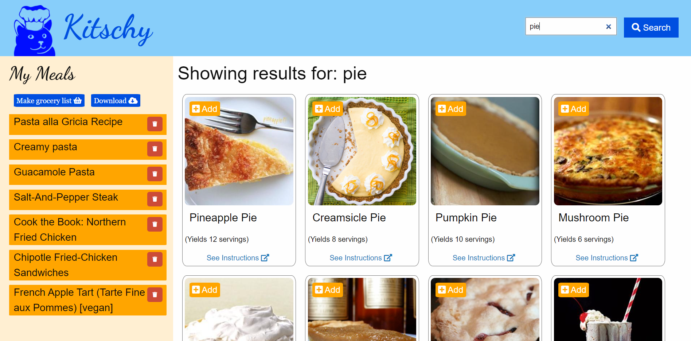
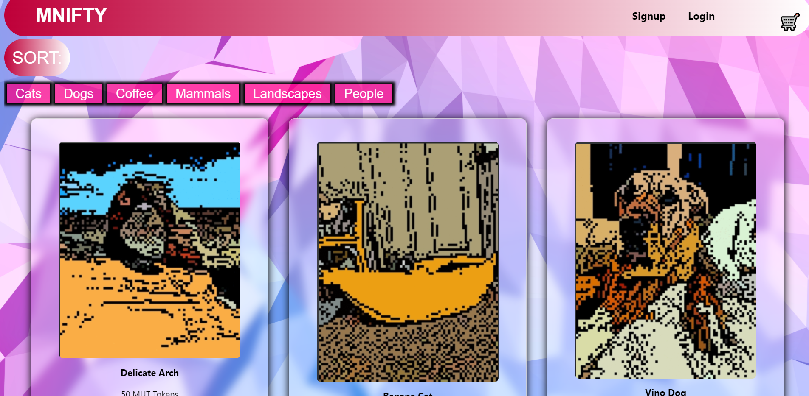

About Me

Hello!
My name is Tyler Brian Yeager.
Allow me to share a bit of my background. I am 28 years old and originally from Arkansas. There I attended the University of Central Arkansas where I obtained a Bachelor of Science degree in Anthropology. Originally I had planned on becoming a famous archaeologist and discovering something that rivaled Carter's discovery of Tutankhamun's tomb. Well, life had different plans and I found myself working a summer season for Arkansas State Parks. Since then I have worked as a Park Ranger for the Bureau of Land management at locations such as Southeast Utah at Bear's Ears National Monument, North-central Colorado, and Northeast Utah. This career gave me the chance to experience new locations, new challenges, and new individuals from a variety of backgrounds. This career taught me much about being a naturalist, using critical thinking to solve problems in fast-paced environments, how to handle public relations, and how to step into a leadership role. While I enjoyed the work, I realized that it was no longer as challenging and I wanted something "more". To this end, I moved to the Bay Area, enrolled in a coding bootcamp, and have undertaken the journey to become a fullstack developer. I look forward to learning much more and to start creating things that have practical use.
Projects
Here are some of my work projects and a brief descript of each. I like to work on thing that can potentially have a practical use or bring in some amount of monetary gain.
Kitschy: Your Kitchen Helper App
Kitschy began with the singular purpose of making shopping/meal-prepping a much easier experience for our users. The idea is that a user can search thousands of recipes, add their favorites, and, with a click of a button, generate a shopping list that combines all like ingredients between the recipes into a singular amount. Instead of having to worry about if one recipe needs two pounds of chicken and another needing six, Kitschy can tell our users the grand total amount they will need to get at the store in order to create each and every one of their saved meals. In addition, we were able to use Google Firebase to create a cloud sharing feature that will allow users to share shopping lists between friends, family members, roommates, or whomever else might want to use it.
Handy Man App
Handy Man was an idea that struck me when I had ordered food through an app. I realized that there existed many apps for ordering food when we're hungry or a ride when we need to get to/from somewhere. However, nothing existed to handle spur of the moment home repairs and with the holidays fast approaching, that might be very benficial to have. We've all been in a position where some major home repair was needed ASAP but then we've had to research online for countless hours, search through conflicting reviews, and make a million calls that go unanswered just for us to go with whoever became available first. Handy Man was a way for users to look up a skilled tradesman, or "vendor", by category, see a list of those who have entered into our database, see reviews, and instantly chat with the vendor in order to discuss the repair/project, negotiate price, and set up a day-of start time. The idea was a sort of "Doordash" but for skilled labor. This is a full stack app that showcases all these functions with intention to add gps tracking and monetary exchange in the future. The list of vendors is prepopulated now but a fully developed app would have vendors paying to join our database thereby exposing them to more business.
MNIFTY
MNIFTY is a "proof-of-concept" project to showcase an eCommerce site focused on showing NFT's and allowing a user to purchase the NFT's with Stripe. The project features a fictional crypto currency as the NFT prices. Future development would include creating the crypto currency and changing the purchasing method to use the MUT tokens.
Budget Tracker Online/Offline PWA
A functioning budget tracker app that allows users to keep track of added and subtracted funds. Being a PWA (progressive-web-application) allows the app to keep track of all changes while offline and update them once online status has been reachieved. Users are also able to download this app to their mobile devices.
Book Search Engine
A book search app that allows users to search for books and create an account that can be logged back into at a later point. Logged in users are able to save books to a favorites list that can be viewed seperately.

Contact Me!
If you feel I would make a great fit at your company then please feel free to get in touch by clicking any of the links below or make note of my personal cell number and email.